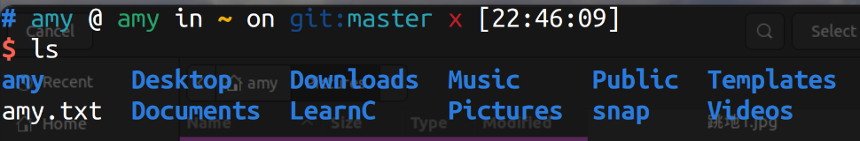
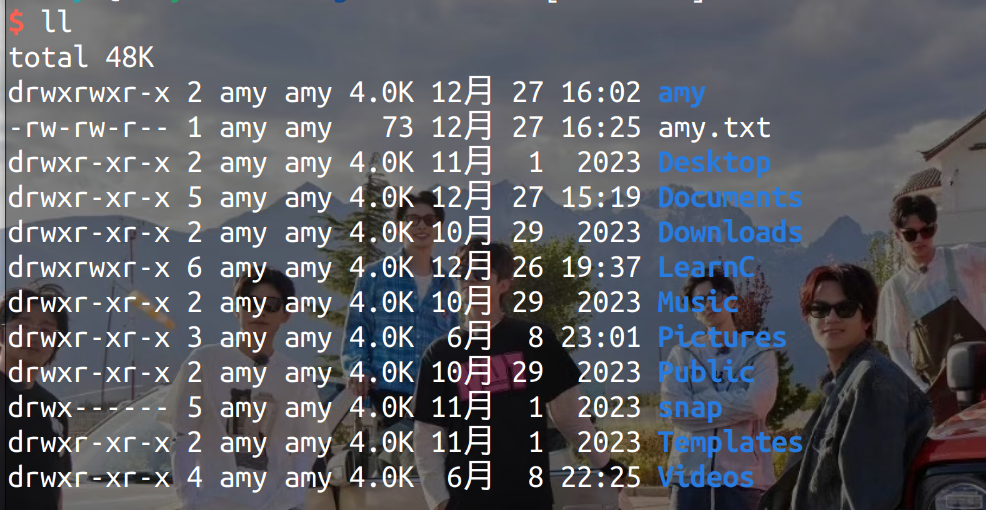

学习笔记
2024.6.8
今天开始要重新学习frank啦
003 Linux 命令

ls:展示出当前文件所有文件夹和文件(不包括隐藏文件)

ll：显示出文件形式以及日期、所属用户等。
2024.8.27
004 linux根目录
- Windows中有盘符，是用来定位的，但是Linux中没有盘符的概念。
- linux一切皆文件
- ~ ：用户根目录，home目录
- 最终目录，根目录：cd ./ ，cd是切换的意思
005 Linux根目录解析
-
/bin：二进制目录
-
/etc：系统配置文件
-
/home：主目录，显示所有用户目录
-
/lib：库目录
-
/mnt：挂载目录（理解为外在设备和电脑连接）
-
/proc：伪文件系统（和配置内核有关）
-
/run：运行目录
-
/tmp：临时目录
-
/var：可变目录
-
/boot：启动目录
-
/dev：设备目录
-
/media：媒体目录
-
/opt：可选目录
-
/root：管理员目录（用户主目录）
-
/sbin：系统二进制目录
-
GNU：高级管理员使用的命令工具
-
/srv：服务目录，本地目录
-
FHS：文件系统层级标准
sudo rm -rf/*：调用管理员身份输入密码删除
## 006 cd命令
cd：这个命令指的是切换到某个文件夹下
cd ~：切换到用户目录
cd ：直接切换到用户目录
cd . :切换到当前目录
cd ..：切换到上一级目录
cd /：返回根目录
cd ../..：返回上两级目录
pwd：输入当前目录
007 Ctrl+C在Linux上是什么？
在Windows中代表复制
但在Linux中，输入命令时，表示强制退出，复制是Ctrl+shift+C键
Linux中没有撤销的概念，终端里不允许撤销
008 绝对路径
文件目录：绝对路径和相对路径
绝对路径：找到一个软件的位置要给全路径
在Windows中是从盘符开始的（盘符:\文件夹\...\文件名.文件后缀）
009 相对路径
相对路径一定要设置背景（前提），即在哪里
目标相对于前提而言在哪里
010 Linux上的路径
绝对路径从根目录“/”开始
输入gedit+空格+绝对路径 可以打开文件
相对路径：要把路径最前面的斜杠去掉，或者加./或者直接给全局路径（前面加个~）也可以
如果不去斜杠，文件中就不显示“~”，而是变成了根目录下面的文件了